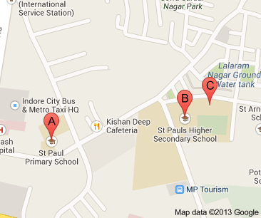
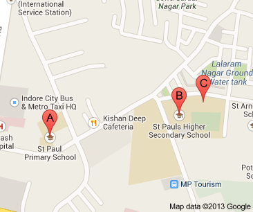

Daly College
 Each school has its own ethos, traditions and identity. Parents should understand and evaluate this aspect, as your children will be influenced by what we stand for. No compromise will be made in our basic beliefs, to satisfy the individual and varied requirements of parents. We believe that all students are equal and must make their own mark within the community. The financial or social status of the parents is irrelevant. Each student's individuality will be respected and the student will be taught to compete against himself or herself rather than against others. Good behaviour must similarly be not to impress others but because it satisfies one's own self respect.
Each school has its own ethos, traditions and identity. Parents should understand and evaluate this aspect, as your children will be influenced by what we stand for. No compromise will be made in our basic beliefs, to satisfy the individual and varied requirements of parents. We believe that all students are equal and must make their own mark within the community. The financial or social status of the parents is irrelevant. Each student's individuality will be respected and the student will be taught to compete against himself or herself rather than against others. Good behaviour must similarly be not to impress others but because it satisfies one's own self respect.
St.Paul
St. Paul is a Christian Minority School for Boys, affiliated with the C.B.S.E, governed and managed by the Catholic Diocese of Indore with its Bishop as the Chairman and Manager. It is unaided and the medium of instruction here is English. The school does not provide hostel facilities, conveyance or meals.


St.Raphaels
St. Raphael's School presently enjoying a prestigious position had a very humble beginning. Way back in 1928, it was born in the parochial shed of the Red Church (the Catholic Church at Indore), with a total strength of just four children and a young girl as their teacher. The first student enrolled was Master S.C.Dube who became an IAS officer and was appointed as the Chairman of the City Improvement Trust, Indore.
Agarwal Public School
Welcome to your dreams come true - Agarwal Public School - the premier Educational Institution in Central India. A trendsetter as one of the first fully integrated school in this part of the country.
Emerald Heights International School